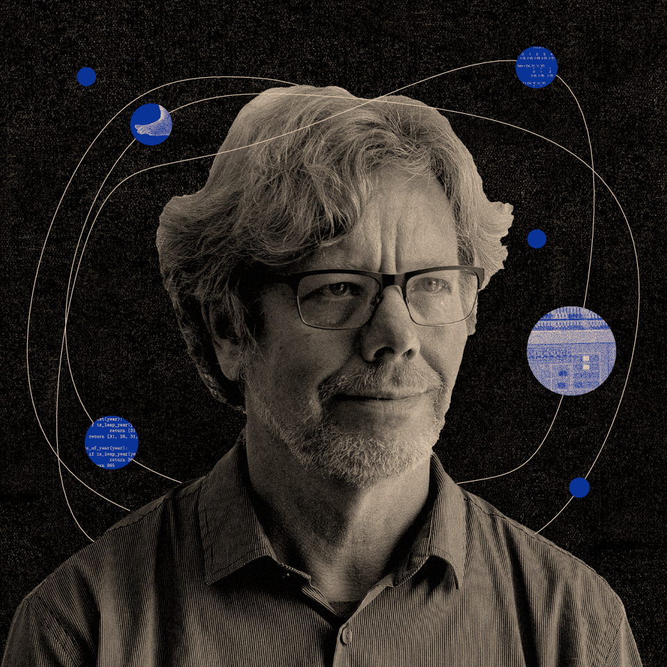

Guido van Rossum
“Python is an experiment in how much freedom programmers need.
Too much freedom and nobody can read another's code; too little and expressiveness is endangered.”

Guido van Rossum
- Born January 31, 1956 in Haaerlem, Netherlands
- Graduated with a Master's Degree in mathematics and computer science from University of Amsterdam in 1982
- Build Python as a scripting language in December 1989, while his office was closed for christmas.
- Defined Language goals for Python in 1999, as an easy intuitive language, and sustainable to everyday tasks. This was inspired for show development times
- Developed Mondrian for a web-based code review system for python
- Joined Dropbox in 2013
- Retired in October 2019